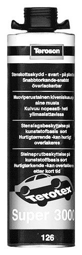

Stone Damage Protection, Teroson T126 (Black)
Stone Damage Protection, Teroson T126 (Black)

Specifications
Teroson Terotex Super 3000 T126 (black). Applied with UBS-spray gun T910, 30 06 798. Plastic-based stone damage protection, quick-drying and can be painted over. 1 litre can.
Transport
The product is classified as dangerous goods when transporting. Special regulations apply to packaging, marking and transport, therefore existing lead times cannot be guaranteed.
Directives
The product is flammable and hazardous to personal health. When it is used, combustible/explosive vapour-air mixtures may be produced. Hazardous if inhaled and in case of skin contact. Irritates skin. Avoid eye and skin contact. Avoid inhaling vapours/mist. Make sure that ventilation is adequate.